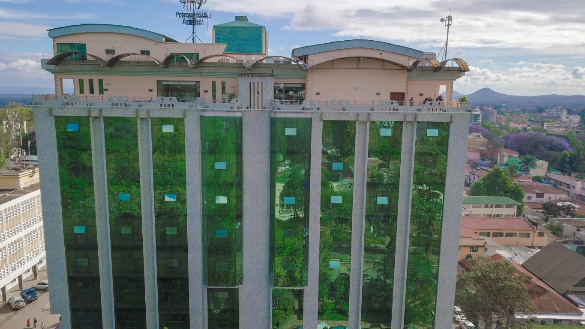

Hotel & lodge
Palace Hotel Arusha
Makongoro Road / Uzunguni
Practical central hotel with several room categories, useful for budget-conscious city stays and meetings.
✓ Makongoro Road✓ Room categories✓ Central access
Plan with Kasoko
A clear request, then a confirmed itinerary.
Use the form to share dates, group size and your preferences. Kasoko checks the current option and contacts you before any payment or final confirmation.
Start your request →